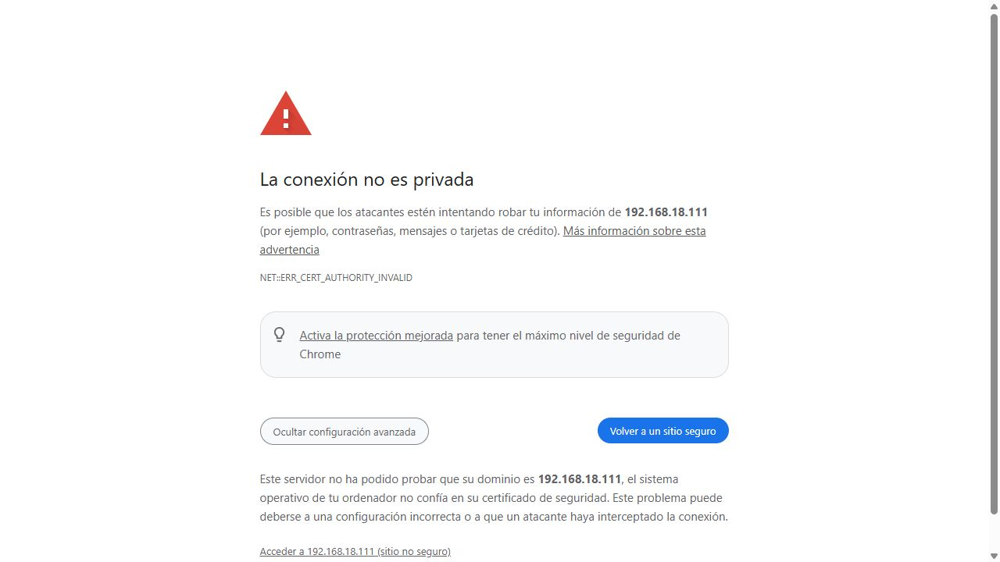
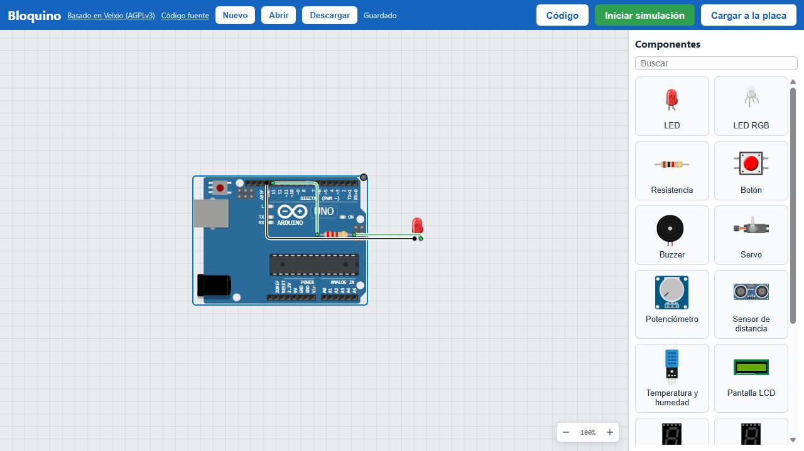
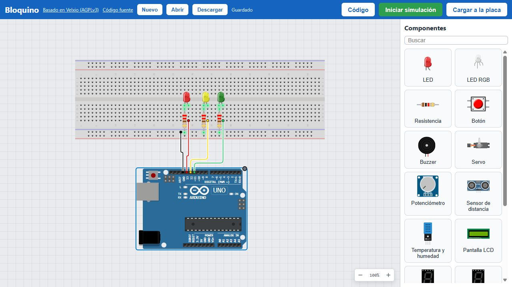
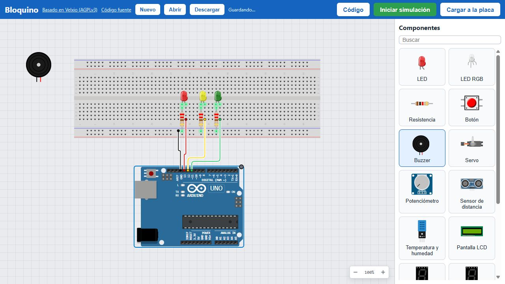
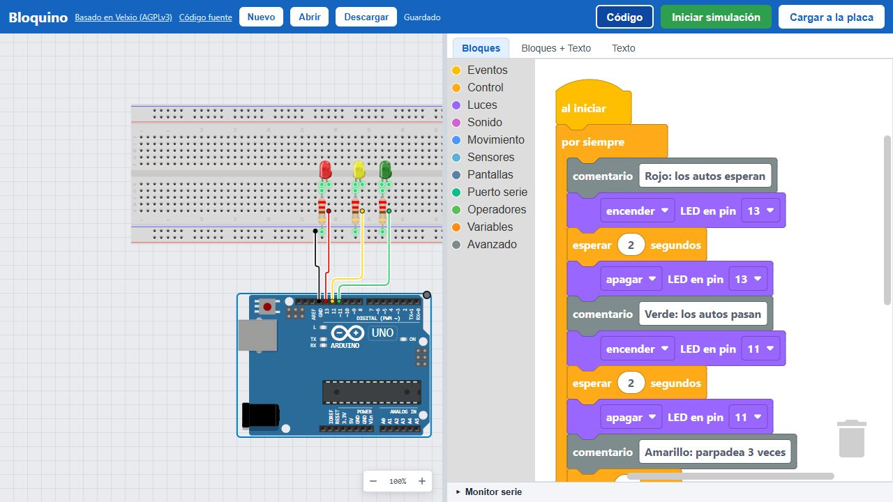
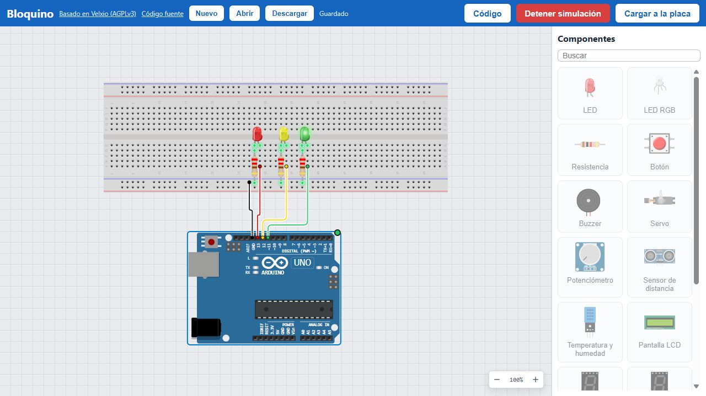
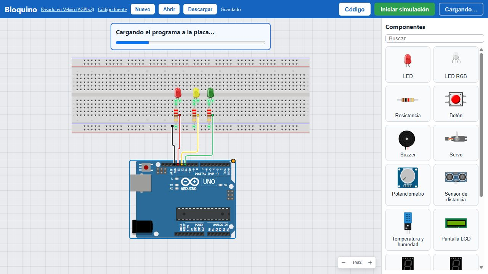
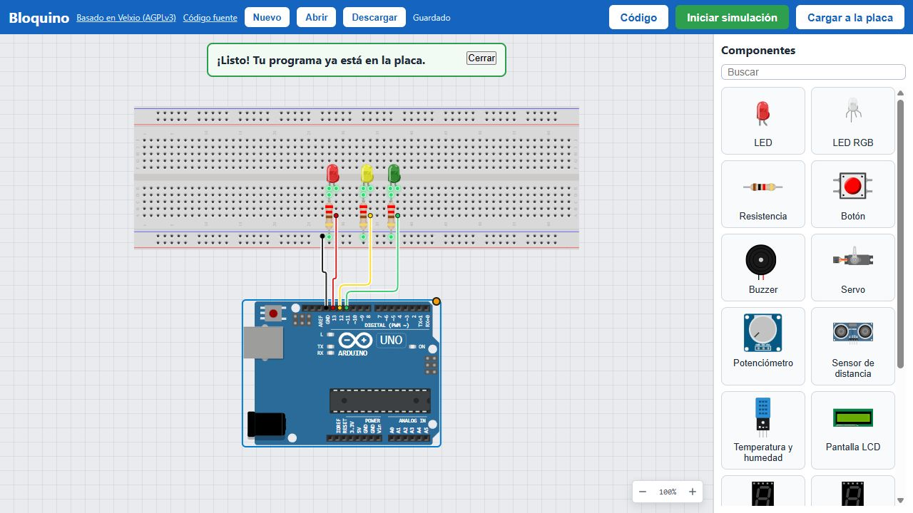

Una clase con Bloquino
Preparar la clase, sumar a los alumnos y dictarla, vista por el profesor y por el alumno.
Sin internet, sin cuentas ni lista de alumnos: cada equipo guarda su proyecto en su navegador y lo entrega como archivo .bloquino.
1 Preparar la clase
Construir Bloquino
Con internet y Docker Desktop abierto, en PowerShell desde repo/:
.\scripts\sala.ps1 --build
Abrir el firewall (PowerShell como administrador):
New-NetFirewallRule -DisplayName "Bloquino" -Direction Inbound -Protocol TCP -LocalPort 80,443 -Action Allow
Levantar la sala
Conectar el notebook a la red de la sala, abrir Docker Desktop y:
.\scripts\sala.ps1
Alumnos: https://192.168.18.111
La primera vez, cada equipo: http://192.168.18.111/ca.crt
Solo simular, sin cargar: http://192.168.18.111
Escribir en la pizarra la dirección Alumnos.
Probar desde otro equipo
Un celular en la misma red sirve: abrir la dirección y pulsar Iniciar simulación. Si la luz de la placa parpadea, compila.
La IP cambia si el notebook se reconecta a la red: volver a correr sala.ps1 y dar la nueva.
2 Sumar a los alumnos
No hay inscripción: un alumno «entra» a la clase abriendo la dirección en Chrome o Edge. La primera vez, cada equipo necesita confiar en el certificado de la sala para poder cargar a la placa. Dos caminos:
A. Instalar la autoridad (una vez)
Abrir http://<IP>/ca.crt (descarga bloquino-ca.crt) y, en la carpeta de descargas:
Import-Certificate -FilePath .\bloquino-ca.crt -CertStoreLocation Cert:\CurrentUser\Root
Windows pregunta si confiar: Sí. Cerrar y abrir el navegador. Sin permisos de administrador. Después, nunca más avisos.
B. Aceptar el aviso del navegador

https://: el proyecto se guarda por dirección, y uno armado en http:// no aparece en la otra.Lo que ve al entrar

123 456 78- Nuevo: empezar de cero.
- Abrir: un archivo
.bloquino. - Descargar: guardar el proyecto como archivo.
- Código: abre los bloques.
- Iniciar simulación.
- Cargar a la placa real, por USB.
- Componentes: clic para sacar uno.
- Lienzo: la placa y el circuito.
Todo se guarda solo en el navegador («Guardado», junto a Descargar).
3 Dictar la clase
En cada momento, lo que hace el profesor (azul) y lo que ve el alumno (verde).
a · Repartir el punto de partida
Da el nombre de un ejemplo de la sala, que se descarga desde la dirección:
https://<IP>/ejemplos/02-semaforo.bloquino
O pasa un .bloquino propio (pendrive, carpeta compartida). O nada: se parte de Nuevo.

b · Armar el circuito
Proyecta su pantalla y arma al mismo tiempo que los alumnos.
Atajos: Supr borra lo seleccionado, R gira, Ctrl+Z deshace. Clic derecho abre la ficha del componente.

c · Programar con bloques
Recorre la sala. La pestaña Texto muestra el C++ que generan los bloques; Bloques + Texto, los dos lado a lado.

d · Probar en el simulador
Cada simulación compila en su notebook (15 alumnos a la vez: menos de 15 s). Si un programa falla, el error sale en la página de ese alumno.

e · Cargar a la placa real
Ayuda con los avisos:
«La placa está ocupada»: cerrar el Arduino IDE u otra pestaña de Bloquino.
«La placa no responde»: cable USB solo de carga o mal puesto.
Solo Chrome y Edge de computador.


f · Entregar
Recoge los archivos (pendrive, carpeta compartida, correo) y revisa cada uno con Abrir.
Abrir reemplaza el proyecto de ese navegador: el profesor revisa en su propio equipo, no en el del alumno.
Descargar → escribir un nombre (por ejemplo semaforo-ana) → queda semaforo-ana.bloquino en Descargas.
Ese archivo trae el circuito y el programa; se abre en cualquier equipo con Bloquino.
4 Al terminar
Descargar antes de cerrar. El proyecto también queda en el navegador y vuelve la próxima clase, si la dirección es la misma.
Puede dejar Docker andando o apagar Bloquino:
docker compose -f docker-compose.bloquino.yml down
Nunca con -v: borraría la autoridad del certificado y habría que instalarla de nuevo en cada equipo.
Si algo falla
| Qué pasa | Qué hacer |
|---|---|
| En el notebook abre y en los equipos no | Firewall (paso 1) o los equipos están en otra red (wifi de invitados, datos del celular). |
| Abría y dejó de abrir | Cambió la IP: .\scripts\sala.ps1 y dar la dirección nueva. |
| Ningún programa simula | docker restart bloquino |
| La placa no aparece en la lista | Clon con chip CH340: instalar su driver antes de la clase. |
| La página se ve antigua | Ctrl+F5. |
Detalle completo en bloquino-dia-de-clase.md. Capturas: scripts/recorrido/guia.js.